Captures d'écran
Animations améliorées pour les humaines en cotte de mailles et en armure de cuir

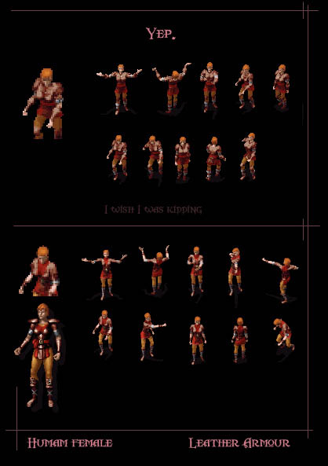
Animations améliorées pour les nains en cotte de mailles
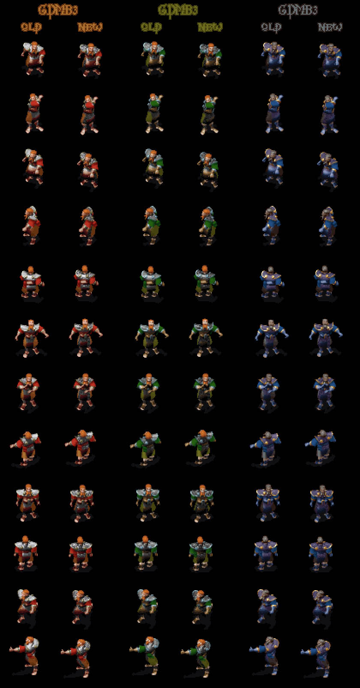
Animations améliorées pour les femmes elfes en armure de cuir
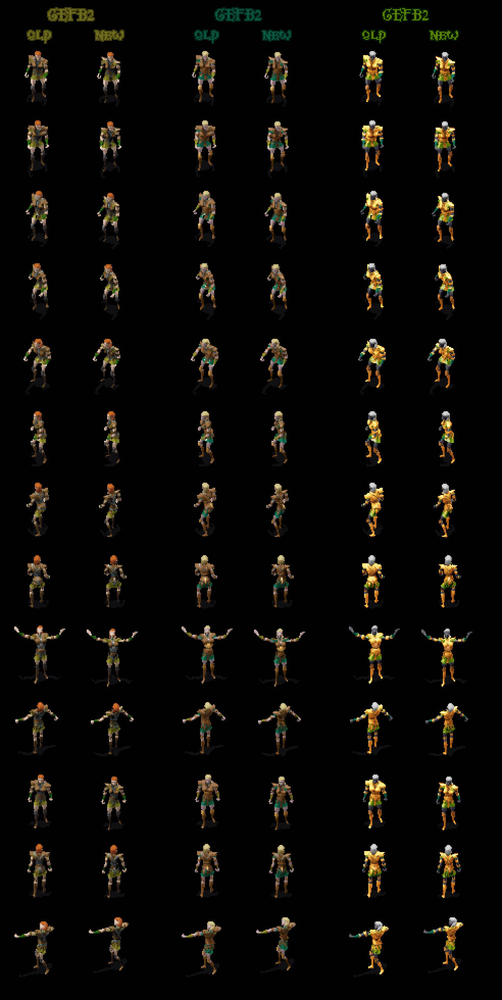
Animations améliorées pour les femmes elfes en cotte de mailles

Animations améliorées pour les prêtresses elfes en armure de plate
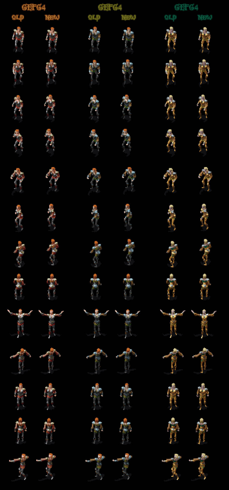
Animations améliorées pour les guerrières elfes en armure de plate

Animations améliorées pour les elfes en cotte de mailles

Animations améliorées pour les humaines sans armure
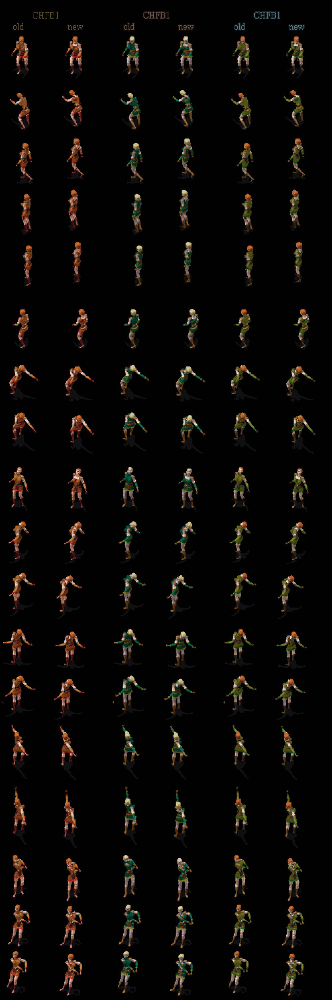
Animations améliorées pour les prêtresses humaines en armure de plate
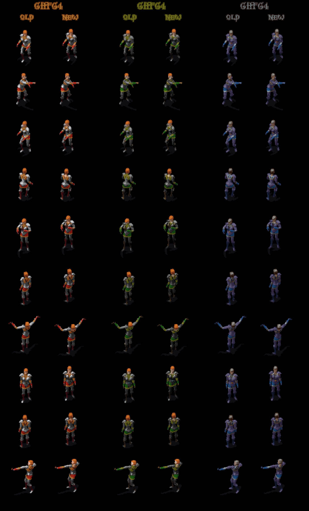
Animations améliorées pour les guerrières humaines en armure de plate
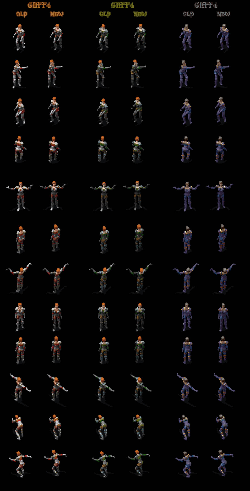
Animations améliorées pour les magiciennes humaines sans armure

Animations améliorées pour les magiciennes humaines en robe légère
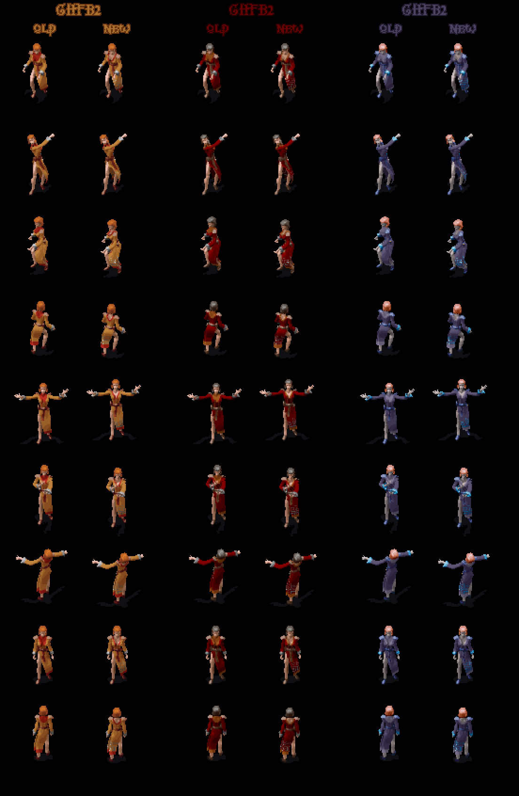
Animations améliorées pour les humains en armure de cuir
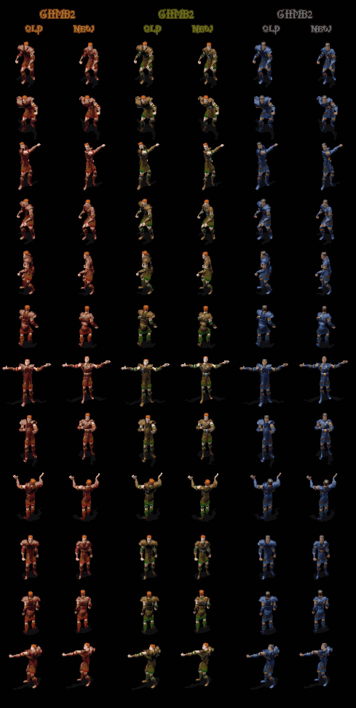
Animations améliorées pour les humains en cotte de mailles
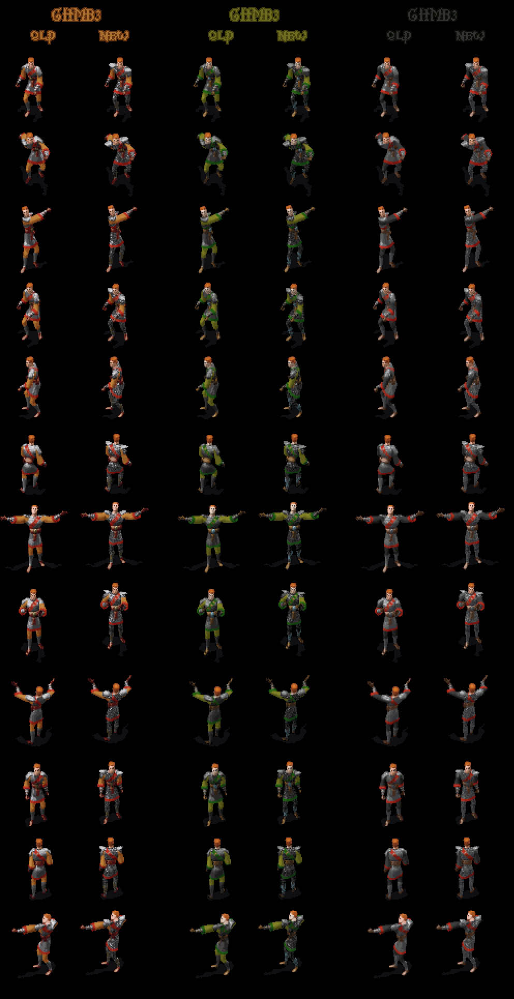
Animations améliorées pour les femmes Halfelins
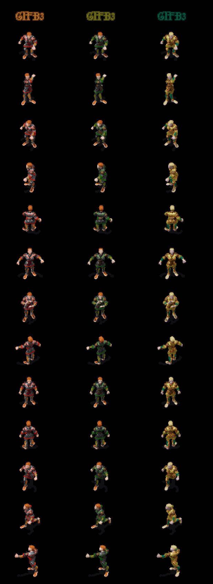
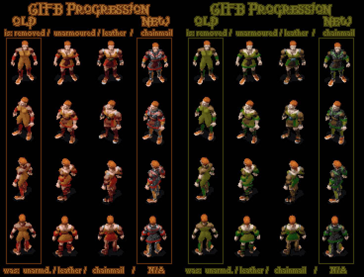
Animations améliorées